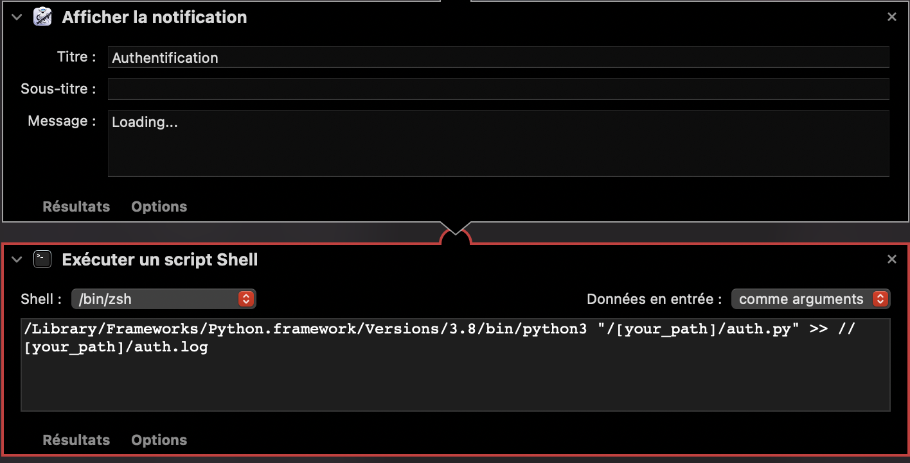
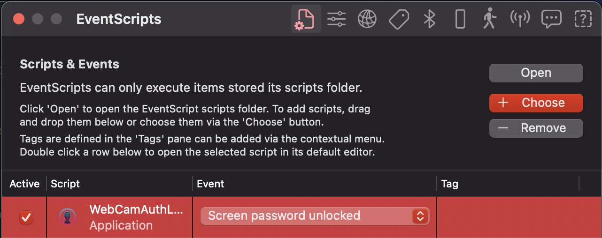

Craft: Facial Authentification
with laptop locking
with voice assistant
(on MacOS)
Facial recognition
-
Using the simple library face_recognition
-
Transfer learning from dlib C++ pretrained CNN ($99.38\%$ on LFW benchmark)
-
Output face encoding in a 128D array $F$
-
Match if euclidian norm below threshold ($0.6$)
$$\text{If} \hspace{0.2cm} \exists i \in [1,\text{nb_known_faces}], \hspace{0.2cm} ||F_i - F_{test}||_{2} \leq 0.6$$
Laptop locking
-
Using Applescript elvish command,
-
The following python code locks the laptop (macOS):
import os
os.system("osascript -e 'tell app \"loginwindow\" to «event aevtrlgo»'")
-
Possible to adapt the time before locking/unlocking
Voice assistant
-
Using the simple offline TTS library pyttsx3
-
As easy as:
import pyttsx3
engine = pyttsx3.init()
engine.say("Now, I can speak.")
engine.runAndWait()
-
Create app from shell script:

-
Launch the app every time your laptop unlocks (or when you want).
-
Or use cron jobs
